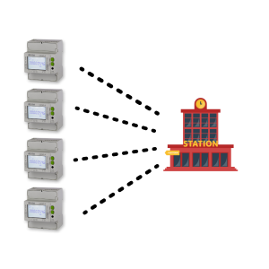

Created: 2021-02-02 Tue 20:41

Figure 1: Smart-meters connect to a station.
\[ s'_0 = \sum_{i=1}^{N} {s_i} = -s_0 \; (mod \; p) \]
\[ C_i = m_i P + s_i H(t) \]
\[ C = \sum_{i=1}^{N} C_i = m P + \sum_{i=1}^{n} s_i * H(t) \]
\[ D = C + s_o H(t) = m P + s H(t) = m P \]
Where: \[ s = s_0 + \sum_{i=1}^{N} s_i = 0 \]